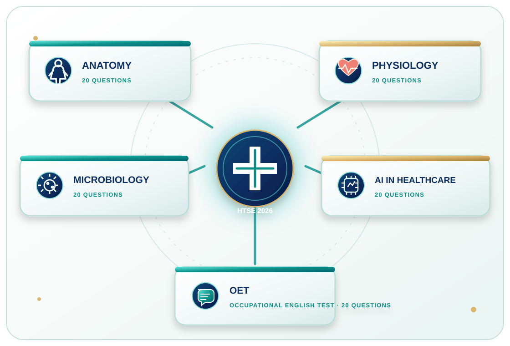

01 · 20 QUESTIONS
Anatomy
Human body structure, anatomical terminology, tissues, organs and major body systems.
Structure · tissues · organs · body systemsNursing, Paramedical and Pharmacy candidates are assessed across five shared subjects: Anatomy, Physiology, Microbiology, Artificial Intelligence in Healthcare and Occupational English Test (OET). Questions are basic, healthcare-focused and calibrated to each stream.

Each subject contributes exactly 20 multiple-choice questions to the 100-question paper.
Human body structure, anatomical terminology, tissues, organs and major body systems.
Structure · tissues · organs · body systemsNormal body functions, organ-system mechanisms and essential physiological regulation.
Body function · homeostasis · regulationBasic microorganisms, infection transmission, common pathogens, sterilisation, disinfection and infection prevention.
Microorganisms · infection · preventionEveryday healthcare uses of AI, medical imaging support, health records, decision-support basics, privacy and responsible use.
Clinical support · digital health · safe AIBasic healthcare English, reading short clinical texts, understanding instructions and choosing clear, professional patient communication.
Healthcare English · reading · communicationSubject coverage and question counts are common. The difficulty and context of questions are adjusted for each candidate stream.
Questions emphasise foundational concepts, patient care, clinical basics and clear healthcare communication.
Questions apply core concepts to diagnostic services, laboratory practice, clinical technology and patient safety.
Questions connect the common subjects to medicines, pharmacy workflows, medication safety and patient counselling.
Explore original sample questions, then attempt a full stream-specific mock paper.